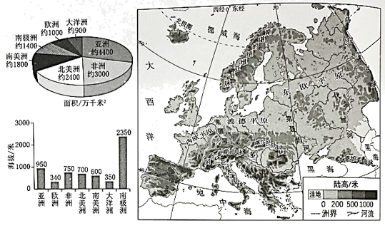
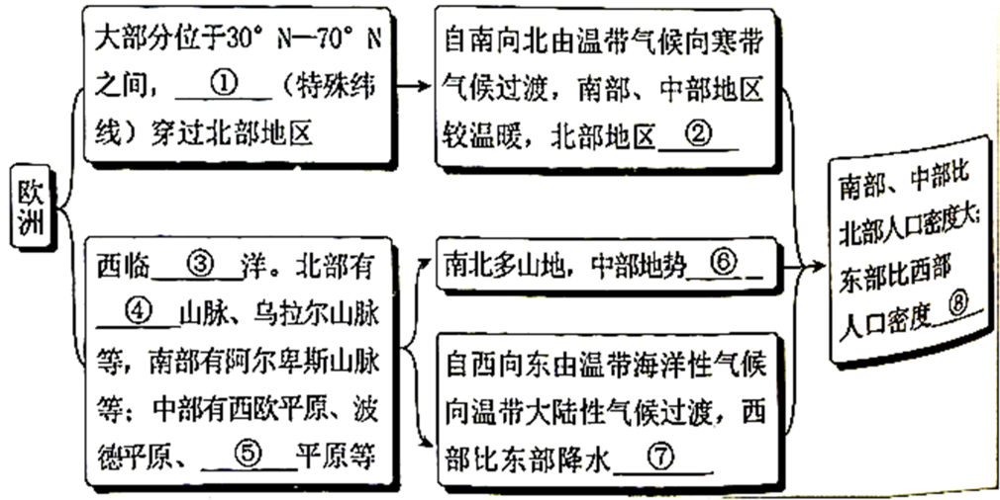

2023年北京中考地理 第28题 解析
28. 通过区域比较和区域分析可以认识区城整体特征和内部差异。左图为世界七大洲面积及平均海拔统计图，右图为欧洲地形图。阅读图文资料，回答下列问题。

（1）七大洲中，欧洲面积居第____位，平均海拔最____；欧洲是工业革命的发源地，经济发展水平____，是世界人口稠密区。
（2）自然环境对人口分布有重要影响，通过分析欧洲的自然环境，认识其人口分布的差异。完成下列框图。

① _________； ②_________；③_________；④_________；
⑤_________；⑥_________；⑦_________；⑧_________。
【答案】（1） ①. 六 ②. 低 ③. 高
（2） ①. 北极圈 ②. 较寒冷 ③. 大西 ④. 斯堪 纳维亚 ⑤. 东欧 ⑥. 较低 ⑦. 丰富 ⑧. 小
纳维亚 ⑤. 东欧 ⑥. 较低 ⑦. 丰富 ⑧. 小
【解析】
【分析】本大题以世界七大洲面积及平均海拔统计图、欧洲地形图为材料，涉及欧洲的概况、地形、气候、人口分布等相关内容，考查学生掌握课本知识的能力和综合思维的地理素养。
【小问1详解】
七大洲按面积排列分别为亚洲、非洲、北美洲、南美洲、南极洲、欧洲、大洋洲。七大洲中，欧洲面积居第六位，欧洲地形以平原为主，是平均海拔最低的大洲。欧洲是工业革命的发源地，经济发展水平高，是世界发达国家数量最多的大洲，是世界人口稠密区。
【小问2详解】
读表，欧洲大部分位于30-70°N之间，①北极圈穿越北部地区，大部分属于北温带，少部分属于北寒带。欧洲自南向北有温带气候向寒带气候过渡，南部、中部地区较温暖，北部地区②较寒冷。欧洲西邻③大西洋，北部有④斯堪的纳维亚山脉，乌拉尔山脉等，南部有阿尔卑斯山脉等，中部有西欧平原、波德平原和⑤东欧平原等。由于南北多山地，中部地势⑥较低，自西向东由温带海洋性气候向温带大陆性气候过渡，西部比东部降水⑦丰富。南部、中部比北部人口密度大，东部比西部人口密度⑧小。
中加共赴未来